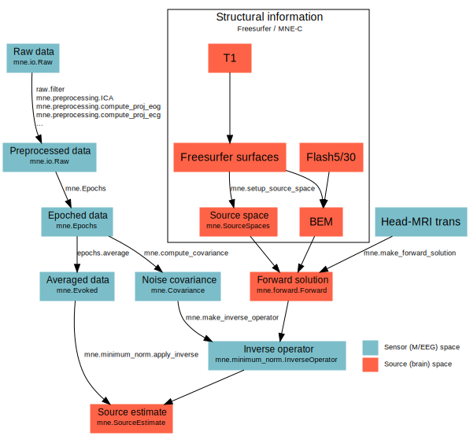

Getting Started¶
This page will help you get started with mne-python. If you are at the Martinos Center, please see this section Inside the Martinos Center. If you would like to use a custom installation of python (or have specific questions about integrating special tools like IPython notebooks), please see this section Advanced installation and setup.
New to the Python programming language?¶
This is a very good place to get started: http://scipy-lectures.github.io.
Installing the Python interpreter¶
For a fast and up to date scientific Python environment that resolves all dependencies, we recommend the Anaconda Python distribution:
https://store.continuum.io/cshop/anaconda/
Anaconda is free for academic purposes.
To test that everything works properly, open up IPython:
ipython --pylab qt
Now that you have a working Python environment you can install MNE.
mne-python installation¶
Most users should start with the “stable” version of mne-python, which can be installed this way:
pip install mne –upgrade
For the newest features (and potentially more bugs), you can instead install the development version by:
pip install -e git+https://github.com/mne-tools/mne-python#egg=mne-dev
If you plan to contribute to the project, please follow the git instructions: Contributing to mne-python source code
Checking your installation¶
To check that everything went fine, in ipython, type:
>>> import mne
If you get a new prompt with no error messages, you should be good to go! Consider reading the Advanced installation and setup for more advanced options and speed-related enhancements.
mne-python basics¶
mne-python uses its own custom objects to store M/EEG data. A full description of these objects is available in the API Reference section. A typical mne-python workflow is as follows:
For example, here we use a simplistic pipeline to go from raw data to brain
source time courses in under 30 lines of code. Note that the only step that
requires manual coregistration is the creation of the head-to-mri transform
file sample_audvis_raw-trans.fif:
>>> # import the necesary packages and functions
>>> from os import path as op
>>> import mne
>>> from mne.datasets.sample import data_path
>>> # structural information (made in Freesurfer and MNE-C)
>>> subjects_dir = op.join(data_path(), 'subjects')
>>> bem_dir = op.join(subjects_dir, 'sample', 'bem')
>>> mri = op.join(data_path(), 'MEG', 'sample', 'sample_audvis_raw-trans.fif')
>>> src = op.join(bem_dir, 'sample-oct-6-src.fif')
>>> bem = op.join(bem_dir, 'sample-5120-5120-5120-bem-sol.fif')
>>> # raw data / experiment information
>>> event_id, tmin, tmax = 1, -0.2, 0.5
>>> raw_fname = op.join(data_path(), 'MEG', 'sample', 'sample_audvis_raw.fif')
>>> # process data
>>> raw = mne.io.Raw(raw_fname, preload=True) # Load raw data
>>> raw.filter(None, 40) # Low-pass filter
>>> events = mne.find_events(raw, stim_channel='STI 014') # Extract events
>>> epochs = mne.Epochs(raw, events, event_id=1, tmin=-0.2, tmax=0.5,
reject=dict(eeg=80e-6, eog=150e-6)) # Create Epochs
>>> evoked = epochs.average() # Average to create Evoked
>>> cov = mne.compute_covariance(epochs, tmax=0) # Calculate baseline covariance
>>> forward = mne.make_forward_solution(evoked.info, mri, src, bem, mindist=5.0)
>>> inverse = mne.minimum_norm.make_inverse_operator(evoked.info, forward, cov)
>>> stc = mne.minimum_norm.apply_inverse(evoked, inverse,
lambda2=1. / 9.) # Source estimates
Check out Tutorial: MEG and EEG data processing with MNE and Python for a more complete explanation of these steps. Also check out the Examples for many more examples showing some of the more advanced features of mne-python.